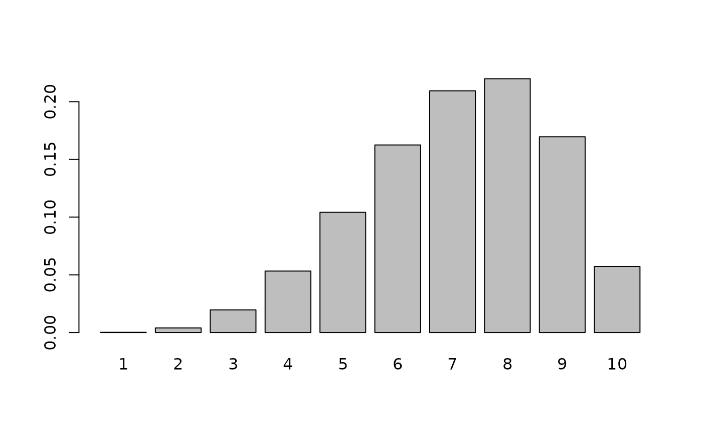
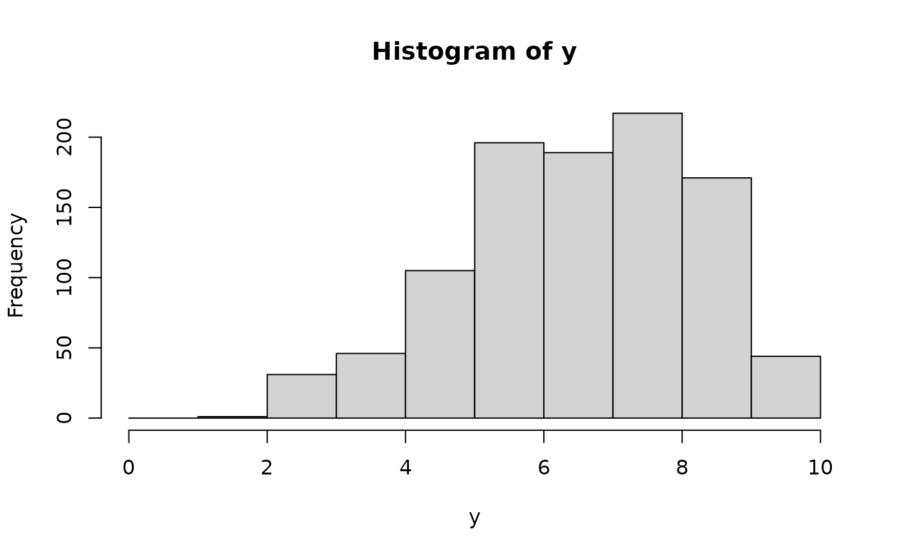

The Discrete Beta (DBT) distribution models ordinal rating data on a fixed integer scale \(R \in \{1, \dots, k\}\) by discretizing an underlying continuous Beta distribution at \(k - 1\) evenly-spaced thresholds \(\gamma_j = j / k\). Unlike proportional-odds style models, which fix the underlying distribution and estimate the thresholds, the Discrete Beta fixes the thresholds and estimates the two shape parameters of the underlying Beta distribution instead. This keeps the model parsimonious (only 2 parameters) while remaining flexible enough to reproduce "U" and "J" (non-monotonic convex) shapes that are common in rating data and that proportional-odds models cannot capture (Sciandra et al., 2024).
Usage
rcogmod_betadiscrete(n, mu = 0.5, phi = 3, k = 5, pzero = 0)
dcogmod_betadiscrete(x, mu = 0.5, phi = 3, k = 5, pzero = 0, log = FALSE)
pcogmod_betadiscrete(
q,
mu = 0.5,
phi = 3,
k = 5,
pzero = 0,
lower.tail = TRUE,
log.p = FALSE
)
qcogmod_betadiscrete(
p,
mu = 0.5,
phi = 3,
k = 5,
pzero = 0,
lower.tail = TRUE,
log.p = FALSE
)
cogmod_betadiscrete_lpmf_expose()
cogmod_betadiscrete_stanvars()
cogmod_betadiscrete(link_mu = "logit", link_phi = "log", link_pzero = "logit")
log_lik_cogmod_betadiscrete(i, prep)
posterior_predict_cogmod_betadiscrete(i, prep, ...)
posterior_epred_cogmod_betadiscrete(prep)Arguments
- n
Number of simulated values.
- mu
Mean of the underlying Beta distribution (
0 < mu < 1).- phi
Precision parameter of the underlying Beta distribution (must be strictly positive). Can be conceptualized as an "agreement" indicator: higher
phimeans less dispersion (more agreement) among ratings, holdingmufixed. Note: In many implementations,phiis parametrized differently, and correspond to the double of ourphiargument (cogmod'sphi= standard'sphi* 2). Our parametrization Makes itphi = 1corresponds to uniform whenmu = 0.5, which makes setting priors more convenient (e.g., on the logit scale)- k
Number of rating categories (a positive integer,
k >= 1), i.e. the response scale runs from 1 tok.- pzero
Probability of an additional "hurdle" point mass at 0, on top of the
1:krating scale. Defaults to0, in which case the distribution reduces to the pure Discrete Beta model. Useful for rating scales that include an extra "zero" category (e.g., "not applicable" or a genuine zero response) that is not part of the underlying1:kcontinuum.- x, q
Vector of quantiles (integer ratings between 1 and
k, or 0 ifpzero > 0).- log, log.p
Logical; if
TRUE, probabilities/densities are returned on the log scale.- lower.tail
Logical; if
TRUE(default), probabilities are \(P(R \le q)\), otherwise \(P(R > q)\).- p
Vector of probabilities.
- link_mu, link_phi, link_pzero
Link functions for the parameters.
pzerodefaults to a"logit"link. By default (i.e., ifpzerois not included in thebrms::bf()formula), it is estimated as a single, intercept-only value shared across all observations (as is done forpmidincogmod_choco()); it can instead be given predictors to let it vary (pzero ~ x), or fixed to a constant – e.g.,pzero = 0, recovering the pure Discrete Beta model – directly inbrms::bf()(as is done forpmidincogmod_choco()).- i, prep
For brms' functions to run: index of the observation and a
brmspreparation object.- ...
Additional arguments.
Value
dcogmod_betadiscrete() returns the probability mass;
pcogmod_betadiscrete() returns the cumulative probability;
qcogmod_betadiscrete() returns the quantile (an integer between 0 and
k); rcogmod_betadiscrete() returns simulated ratings. All are numeric
vectors, vectorized over x/q/p, mu, phi, pzero and k.
cogmod_betadiscrete() returns a brms::custom_family object, to put on
a brms::bf() formula. cogmod_betadiscrete_stanvars() returns a
brms::stanvars object holding the family's Stan functions block, to
pass to brms::brm(), and cogmod_betadiscrete_lpmf_expose() compiles
that Stan code and returns it as an R function, for checking the mass
function outside of a model. The remaining functions are brms
post-processing methods, called by brms rather than directly:
log_lik_cogmod_betadiscrete() returns a numeric vector holding one
log-likelihood value per posterior draw for observation i,
posterior_predict_cogmod_betadiscrete() a draws x 1 matrix of ratings
simulated for observation i, and
posterior_epred_cogmod_betadiscrete() a draws x observations matrix of
expected ratings.
Details
Writing \(\alpha = \mu \phi\) and \(\beta = (1 - \mu)\phi\) for the shape parameters of the underlying Beta distribution, the probability mass function is (Sciandra et al., 2024, eq. 2) $$P(R = j) = F_B(j/k; \alpha, \beta) - F_B((j-1)/k; \alpha, \beta), \quad j = 1, \dots, k$$ where \(F_B\) is the Beta CDF.
rcogmod_betadiscrete() uses the equivalent, faster generative representation:
draw a continuous \(X \sim Beta(\alpha, \beta)\) and set
\(R = \lceil k X \rceil\), clipped to [1, k].
When pzero > 0, a hurdle is added at 0: with probability pzero the
response is 0, and with probability 1 - pzero it is generated from the
Discrete Beta distribution described above, i.e.
$$P(R = 0) = \code{pzero}, \quad P(R = j) = (1 - \code{pzero}) \times [F_B(j/k) - F_B((j-1)/k)], \quad j = 1, \dots, k$$
Special cases:
mu = 0.5,phi = 1(i.e.alpha = beta = 1): reduces to the discrete Uniform distribution on1:k.alpha, beta < 1: "U"/"J"-shaped, with mass concentrated in the tails.alpha, beta > 1: concave, with mass concentrated around the middle category.phi -> Inf(withmufixed): mass concentrates on a single category.pzero = 0: reduces to the pure Discrete Beta model (no hurdle).
Note that y = 0 is always handled by pzero alone, and k always refers to the
number of categories of the non-zero 1:k part of the scale. What
does require some care is deciding what k should be and whether to
estimate or fix pzero, depending on how the zero in your data arose:
Scale is
0:Nand 0 is not a hurdle (just the lowest ofN + 1ordinary ordinal categories, e.g., a 0-10 rating scale with no excess of zeros): recode the data to1:(N + 1)(add 1 to every response), usevint(N + 1), and fixpzero = 0as shown below.Scale is
0:Nand 0 is a hurdle (e.g., a mix of a genuine/excess "zero" response with an ordinal1:Nscale): keep the data as-is, usevint(N)(i.e., the total number of categories minus the hurdle category), and letpzerobe estimated (optionally with predictors,pzero ~ x).Scale is
1:Nwith excess responses piling up at the low end (e.g., a floor effect at the lowest category): recode by subtracting 1 (1:Nbecomes0:(N - 1)), then proceed as in the previous bullet, i.e.,vint(N - 1)and estimatepzero.
References
Sciandra, M., Fasola, S., Albano, A., Di Maria, C., & Plaia, A. (2024). Discrete Beta and Shifted Beta-Binomial models for rating and ranking data. Environmental and Ecological Statistics, 31, 317-338. doi:10.1007/s10651-023-00592-5
Examples
x <- 1:10
probs <- dcogmod_betadiscrete(x, mu = 0.66, phi = 3.51, k = 10)
barplot(probs, names.arg = x)

y <- rcogmod_betadiscrete(1000, mu = 0.66, phi = 3.51, k = 10)
hist(y, breaks = 0:10)

# discrete Uniform special case
dcogmod_betadiscrete(1:5, mu = 0.5, phi = 1, k = 5)
#> [1] 0.2 0.2 0.2 0.2 0.2
# hurdle at zero: 20% chance of a 0, otherwise pure Discrete Beta
dcogmod_betadiscrete(0:5, mu = 0.66, phi = 3.51, k = 5, pzero = 0.2)
#> [1] 0.200000000 0.003364066 0.058336907 0.213310091 0.343484931 0.181504005
# \donttest{
# Exposing the Stan function needs cmdstanr and a CmdStan toolchain,
# which live outside CRAN - see the package website to install them.
if (requireNamespace("cmdstanr", quietly = TRUE) &&
!is.null(cmdstanr::cmdstan_version(error_on_NA = FALSE))) {
lpmf <- cogmod_betadiscrete_lpmf_expose()
lpmf(y = 7, mu = 0.66, phi = 3.51, pzero = 0, k = 10)
}
# }
# Fitting with brms. Because `k` is fixed data rather than a distributional
# parameter, it is passed through the brms::vint() addition term. Put the
# family on the formula, and cogmod_stanvars() supplies the Stan code for it.
f <- brms::bf(rating | vint(k) ~ predictor, family = cogmod_betadiscrete())
cogmod_stanvars(f)
#> [[1]]
#> [[1]]$name
#> [1] ""
#>
#> [[1]]$sdata
#> NULL
#>
#> [[1]]$scode
#> [1] "\n// Log probability mass function for the (hurdle) Discrete Beta distribution\n// (Sciandra et al., 2024, Sect. 3.1)\n// y : observed rating, integer in {0, 1, ..., k}. y = 0 is only valid\n// when pzero > 0 (hurdle point mass below the 1..k rating scale)\n// mu : mean of the underlying Beta distribution (0 < mu < 1); the\n// 'liking' indicator on the logit scale\n// phi : precision of the underlying Beta distribution (alpha + beta > 0);\n// the 'agreement' indicator on the log scale\n// pzero : probability of the hurdle point mass at 0 (0 <= pzero < 1)\n// k : number of rating categories (fixed, passed in as data)\nreal cogmod_betadiscrete_lpmf(int y, real mu, real phi, real pzero, int k) {\n real alpha;\n real beta_par;\n real upper_lcdf;\n real lower_lcdf;\n\n if (y < 0 || y > k) {\n reject(\"cogmod_betadiscrete_lpmf: y must be an integer between 0 and k; found y = \", y);\n }\n\n if (y == 0) {\n return log(pzero);\n }\n\n alpha = mu * phi * 2;\n beta_par = (1 - mu) * phi * 2;\n\n // P(R = y) = F_B(y/k) - F_B((y-1)/k), computed on the log scale for\n // numerical stability via log_diff_exp(log(upper), log(lower)).\n upper_lcdf = (y == k) ? 0.0 : beta_lcdf(y * 1.0 / k | alpha, beta_par);\n lower_lcdf = (y == 1) ? negative_infinity() : beta_lcdf((y - 1) * 1.0 / k | alpha, beta_par);\n\n return log1m(pzero) + log_diff_exp(upper_lcdf, lower_lcdf);\n}\n"
#>
#> [[1]]$block
#> [1] "functions"
#>
#> [[1]]$position
#> [1] "start"
#>
#> [[1]]$pll_args
#> character(0)
#>
#>
#> attr(,"class")
#> [1] "stanvars"
# To also model the hurdle probability (e.g., proportion of zero ratings):
brms::bf(rating | vint(k) ~ predictor, pzero ~ predictor,
family = cogmod_betadiscrete()
)
#> rating | vint(k) ~ predictor
#> pzero ~ predictor
# To fix pzero at exactly 0, e.g. because your scale has no hurdle:
brms::bf(rating | vint(k) ~ predictor, pzero = 0,
family = cogmod_betadiscrete()
)
#> rating | vint(k) ~ predictor
#> pzero = 0